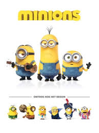

 |
SinopsisLos minions, ingenuos y torpes ayudantes de villano, llevan buscando, desde el principio de los tiempos, un verdadero malhechor al que servir. A lo largo de una evolución de millones de años, los minions se han puesto al servicio de los amos más despreciables. Kevin, acompañado por el rebelde Stuart y el adorable Bob, emprende un emocionante viaje para conseguir una jefa a quien servir, la terrible Scarlet Overkill.
90 minutos
All
|